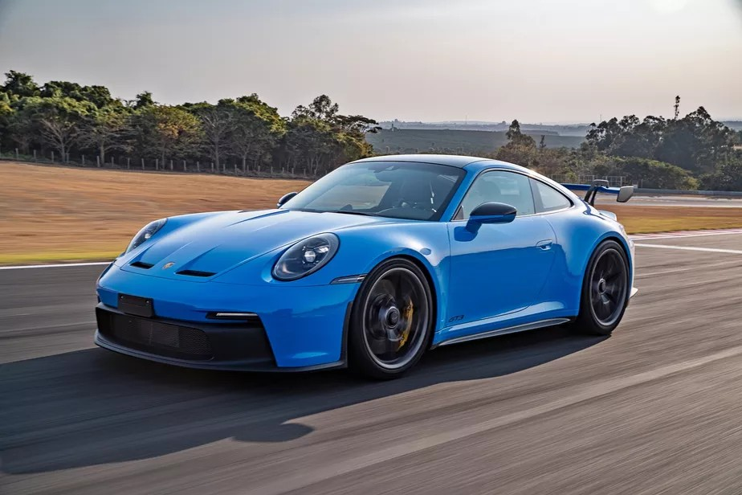
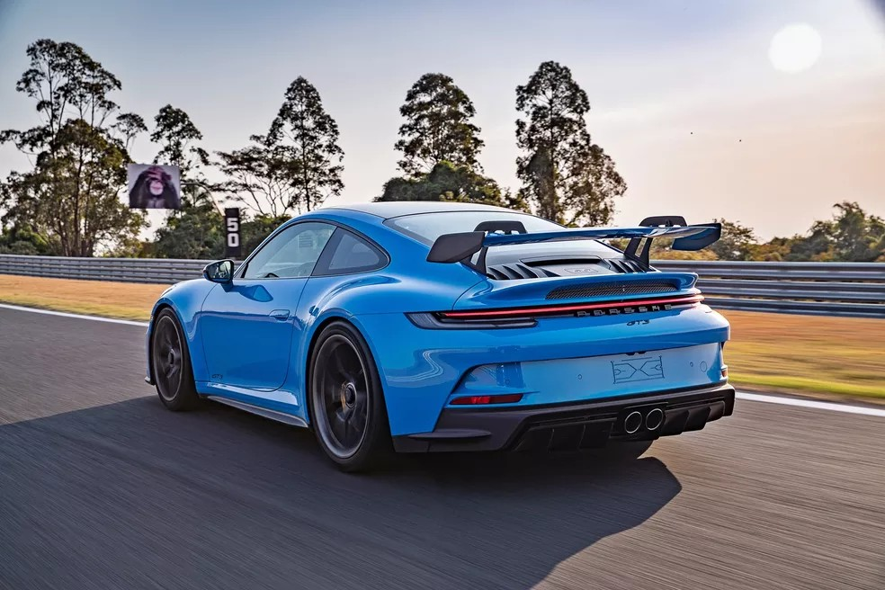
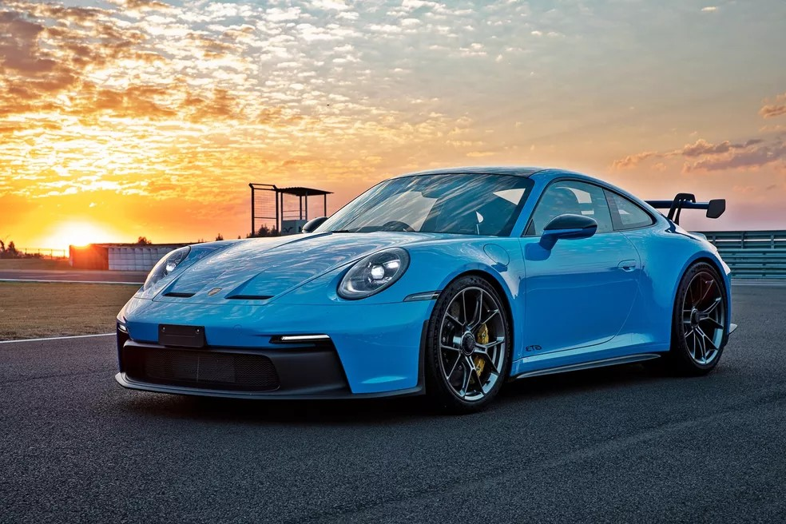
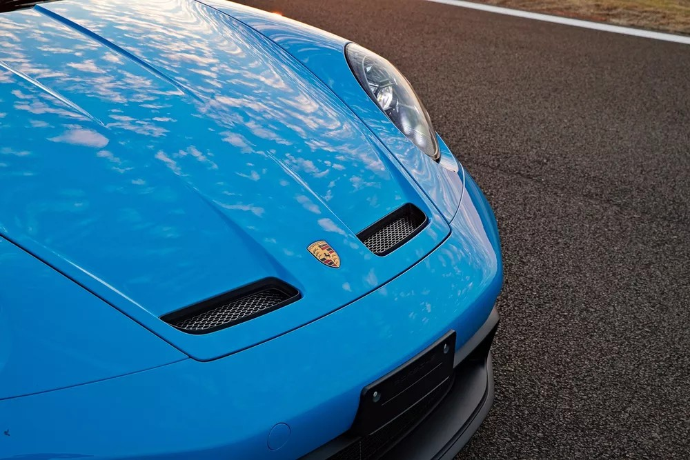
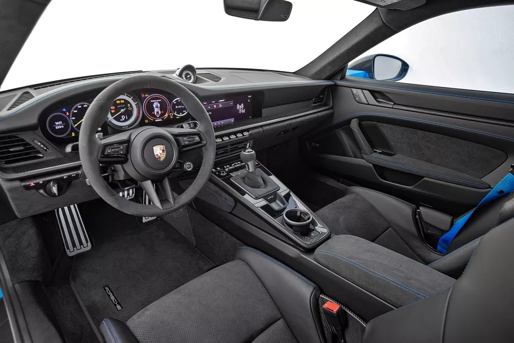

Novo Porsche 911 GT3 é esportivo ao extremo e vale cada centavo dos mais de R$ 1,1 milhão
Primeiro carro de produção com motor aspirado a baixar a marca dos sete minutos em Nürburgring.
É difícil dormir quando você pensa: "amanhã eu vou acelerar o novo e recordista Porsche 911 GT3 na pista". O superesportivo alemão teve a pré-venda no Brasil iniciada em março, mas sua chegada oficial só aconteceu em agosto. O preço é de R$ 1,1 milhão e todas as 40 unidades foram esgotadas — um novo lote deve vir em breve. Será que a adrenalina ao volante é tão forte para valer essa grana toda?
A sétima geração do modelo traz um feito histórico consigo: conseguiu cravar 6min59s927 no lendário circuito de Nürburgring, na Alemanha, que tem 20,8 km de extensão. É o primeiro carro de produção com motor aspirado a baixar a marca dos sete minutos. A volta foi 16 segundos mais rápida que a da geração anterior.
Se você pensou que o motor é muito mais potente que o antigo, está enganado. O propulsor é o mesmo 4.0 Boxer de seis cilindros opostos, mas agora com 510 cv, contra 500 cv do antecessor, e gera 47,9 kgfm, ante 46,9 kgfm do antigo. Porém, essa diferença de tempo absurda não está nos 10 cv a mais.
Nessa nova geração a Porsche utiliza materiais mais leves em parte da carroceria, como fibra de carbono no capô — e opcional para o teto por R$ 23.700 — e vidros mais leves. O 911 GT3 atual tem 1.435 kg.
A diferença de peso não é algo tão considerável. A equipe de engenharia investiu muito em melhorias aerodinâmicas que, segundo os integrantes, foi o principal diferencial para baixar tanto o tempo em Nürburgring.
O efeito que utiliza o fluxo de ar para manter o carro grudado no solo, chamado de downforce, teve melhoria de 150% em relação ao GT3 anterior. Isso foi possível, dentre outra mexidas, graças ao já mencionado capô de fibra de carbono, ao assoalho plano e ao novo para-choque, que reduz o arrasto aerodinâmico e ainda refrigera os freios dianteiros de carbono-cerâmica.
O eixo dianteiro também conta com um ajuste automático de altura e pode ficar até 3 cm mais alto. A alma do superesportivo é a pista, só que, como ele é homologado para as ruas, esses ajustes são necessários para andar na cidade.
Com a ajuda do GPS, o sistema de suspensão é capaz de memorizar onde estão as imperfeições do solo e, automaticamente, subir a altura de rodagem. Como o que não falta nas ruas brasileiras são imperfeições, esse recurso é bem útil.
Na traseira, os novos difusores, que têm quatro estágios de ajuste, geram mais de 60 kg de downforce sem aumentar o arrasto. Outro fator que melhora muito a aerodinâmica é a enorme asa, que beneficia a passagem do ar e empurra a traseira do GT3 contra o chão em altas velocidades para mantê-lo grudado no solo.
Os pneus de alto desempenho são de série: as rodas dianteiras têm 20 polegadas e pneus 255/35 R20; as traseiras, 21 polegadas com pneus 315/30 R21.
Em relação à suspensão, a mudança foi grande. A dianteira tem esquema de duplos braços transversais, conjunto originário das pistas que é capaz de segurar mais os movimentos laterais do que o conjunto McPherson do 911 convencional. Já a traseira conta com o sistema multilink de cinco braços. A suspensão é inteiramente ajustável.
No interior, os bancos de carros de corrida são feitos de fibra de carbono, revestidos de couro com costuras na cor da carroceria. Os dois assentos traseiros foram retirados para dar lugar às instalações de barras de proteção, o Santantônio. Como de costume nos carros da Porsche, os materiais e acabamentos internos do 911 GT3 são bem luxuosos.
Além de tudo que já foi citado, entre os principais equipamentos do 911 GT3 estão ar-condicionado digital de duas zonas, bancos com memória e ajuste elétrico somente de altura, câmera de ré, todo o conjunto óptico de LED, sistema de áudio Bose, espelhos retrovisores antiofuscantes e rebatíveis eletricamente e duas telas de 7 polegadas, uma do cluster e uma da central multimídia, compatível com Apple CarPlay.